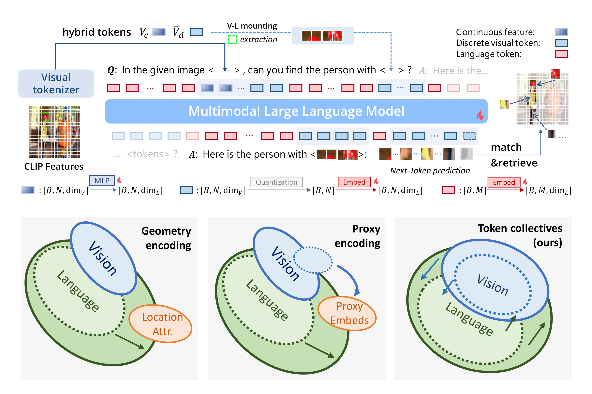

Tianren Ma马 天任Ph.D. CandidateLearning and Machine Perception Lab (LAMP) School of Electronic, Electrical and Communication Engineering University of Chinese Academy of Sciences (UCAS) Beijing, China, 100083. Email: matianren18@mails.ucas.ac.cn Github: https://github.com/martian422 |
|
My Biography
I am a Ph.D. candidate of LAMP at UCAS, advised by Prof. Qixiang Ye.
During my undergraduate studies, I contributed to the development of remote sensing algorithm for satellites, and got my B.E. degree in UCAS in 2022. My previous academic works focus on empowering vision-language models to carry out instance-level comprehension.
I'm now exploring multimodal model's capability with unified discrete representations.
个人简介
我是中国科学院大学LAMP实验室的博士研究生， 导师是叶齐祥教授。
本科期间，我参与了某卫星的遥感算法开发工作，并于2022年在中国科学院大学获得工学学士学位。 我之前的学术研究主要围绕视觉-语言模型的实例级理解能力开展。
目前，我正在对统一离散表征下的多模态模型进行探索。
Major Publications
主要论文
 |
Tianren Ma, Xiaosong Zhang, Boyu Yang, Junlan Feng, Qixiang Ye
ReDDiT: Rehashing Noise for Discrete Visual Generation Under Review. [Paper TBD] |
|  | Tianren Ma, Lingxi Xie, Yunjie Tian, Boyu Yang, Qixiang Ye
ClawMachine: Learning to Fetch Visual Tokens for Referential Comprehension ICLR, 2025 [Paper] [Code] |
 |
Yunjie Tian*, Tianren Ma*, Lingxi Xie, Qixiang Ye
ChatterBox: Multimodal Referring and Grounding with Chain-of-Questions AAAI, 2025 [Paper] [Code] |
 |
Jihao Qiu*, Yuan Zhang*, Xi Tang*, Lingxi Xie, Tianren Ma, Pengyu Yan, David Doermann, Qixiang Ye, Yunjie Tian
Artemis: Towards Referential Understanding in Complex Videos NeurIPS, 2024 [Paper] [Code] |
* indicates equal contribution.
* 表示作者贡献相同。